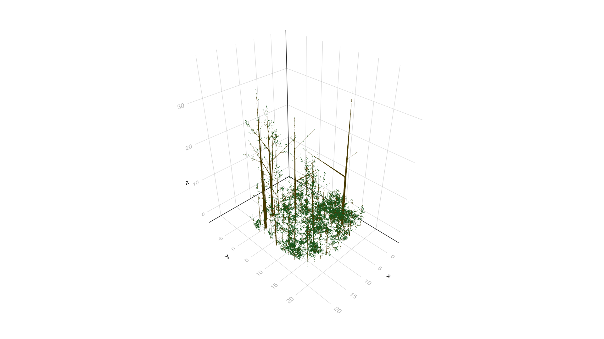

import Pkg
Pkg.add("Distributions")
Pkg.add("Plots")Forest
In this example we extend the tree example into a forest, where each tree is described by a separate graph object and parameters driving the growth of these trees vary across individuals following a predefined distribution. This tutorial requires using the Distributions.jl package:
The data types, rendering methods and growth rules are the same as in the binary tree example:
using VPL
using Distributions, Plots
# Data types
module TreeTypes
import VPL
# Meristem
struct Meristem <: VPL.Node end
# Bud
struct Bud <: VPL.Node end
# Node
struct Node <: VPL.Node end
# BudNode
struct BudNode <: VPL.Node end
# Internode (needs to be mutable to allow for changes over time)
Base.@kwdef mutable struct Internode <: VPL.Node
length::Float64 = 0.10 # Internodes start at 10 cm
end
# Leaf
Base.@kwdef struct Leaf <: VPL.Node
length::Float64 = 0.20 # Leaves are 20 cm long
width::Float64 = 0.1 # Leaves are 10 cm wide
end
# Graph-level variables
Base.@kwdef struct treeparams
growth::Float64 = 0.1
budbreak::Float64 = 0.25
phyllotaxis::Float64 = 140.0
leaf_angle::Float64 = 30.0
branch_angle::Float64 = 45.0
end
end
import .tree
# Create geometry + color for the internodes
function VPL.feed!(turtle::Turtle, i::TreeTypes.Internode, vars)
# Rotate turtle around the head to implement elliptical phyllotaxis
rh!(turtle, vars.phyllotaxis)
HollowCylinder!(turtle, length = i.length, height = i.length/15, width = i.length/15,
move = true, color = RGB(0.5,0.4,0.0))
return nothing
end
# Create geometry + color for the leaves
function VPL.feed!(turtle::Turtle, l::TreeTypes.Leaf, vars)
# Rotate turtle around the arm for insertion angle
ra!(turtle, -vars.leaf_angle)
# Generate the leaf
Ellipse!(turtle, length = l.length, width = l.width, move = false,
color = RGB(0.2,0.6,0.2))
# Rotate turtle back to original direction
ra!(turtle, vars.leaf_angle)
return nothing
end
# Insertion angle for the bud nodes
function VPL.feed!(turtle::Turtle, b::TreeTypes.BudNode, vars)
# Rotate turtle around the arm for insertion angle
ra!(turtle, -vars.branch_angle)
end
# Rules
meristem_rule = Rule(TreeTypes.Meristem, rhs = mer -> TreeTypes.Node() +
(TreeTypes.Bud(), TreeTypes.Leaf()) +
TreeTypes.Internode() + TreeTypes.Meristem())
function prob_break(bud)
# We move to parent node in the branch where the bud was created
node = parent(bud)
# We count the number of internodes between node and the first Meristem
# moving down the graph
check, steps = hasDescendent(node, condition = n -> data(n) isa TreeTypes.Meristem)
steps = Int(ceil(steps/2)) # Because it will count both the nodes and the internodes
# Compute probability of bud break and determine whether it happens
if check
prob = min(1.0, steps*vars(bud).budbreak)
return rand() < prob
# If there is no meristem, an error happened since the model does not allow for this
else
error("No meristem found in branch")
end
end
branch_rule = Rule(TreeTypes.Bud,
lhs = prob_break,
rhs = bud -> TreeTypes.BudNode() + TreeTypes.Internode() + TreeTypes.Meristem())WARNING: could not import Main.tree into MainRule replacing nodes of type Main.TreeTypes.Bud without context capturing.The main difference with respect to the tree is that several of the parameters will vary per TreeTypes. Also, the location of the tree and initial orientation of the turtle will also vary. To achieve this we need to:
Add two additional initial nodes that move the turtle to the starting position of each tree and rotates it.
Wrap the axiom, rules and the creation of the graph into a function that takes the required parameters as inputs.
function create_tree(origin, growth, budbreak, orientation)
axiom = T(origin) + RH(orientation) + TreeTypes.Internode() + TreeTypes.Meristem()
tree = Graph(axiom = axiom, rules = (meristem_rule, branch_rule),
vars = TreeTypes.treeparams(growth = growth, budbreak = budbreak))
return tree
endcreate_tree (generic function with 1 method)The code for elongating the internodes to simulate growth remains the same as for the binary tree example
getInternode = Query(TreeTypes.Internode)
function elongate!(tree, query)
for x in apply(tree, query)
x.length = x.length*(1.0 + vars(tree).growth)
end
end
function growth!(tree, query)
elongate!(tree, query)
rewrite!(tree)
end
function simulate(tree, query, nsteps)
new_tree = deepcopy(tree)
for i in 1:nsteps
growth!(new_tree, query)
end
return new_tree
endsimulate (generic function with 1 method)Let’s simulate a forest of 10 x 10 trees with a distance between (and within) rows of 2 meters. First we generate the original positions of the trees. For the position we just need to pass a Vec object with the x, y, and z coordinates of the location of each TreeTypes. The code below will generate a matrix with the coordinates:
origins = [Vec(i,j,0) for i = 1:2.0:20.0, j = 1:2.0:20.0]10×10 Matrix{StaticArraysCore.SVector{3, Float64}}:
[1.0, 1.0, 0.0] [1.0, 3.0, 0.0] [1.0, 5.0, 0.0] … [1.0, 19.0, 0.0]
[3.0, 1.0, 0.0] [3.0, 3.0, 0.0] [3.0, 5.0, 0.0] [3.0, 19.0, 0.0]
[5.0, 1.0, 0.0] [5.0, 3.0, 0.0] [5.0, 5.0, 0.0] [5.0, 19.0, 0.0]
[7.0, 1.0, 0.0] [7.0, 3.0, 0.0] [7.0, 5.0, 0.0] [7.0, 19.0, 0.0]
[9.0, 1.0, 0.0] [9.0, 3.0, 0.0] [9.0, 5.0, 0.0] [9.0, 19.0, 0.0]
[11.0, 1.0, 0.0] [11.0, 3.0, 0.0] [11.0, 5.0, 0.0] … [11.0, 19.0, 0.0]
[13.0, 1.0, 0.0] [13.0, 3.0, 0.0] [13.0, 5.0, 0.0] [13.0, 19.0, 0.0]
[15.0, 1.0, 0.0] [15.0, 3.0, 0.0] [15.0, 5.0, 0.0] [15.0, 19.0, 0.0]
[17.0, 1.0, 0.0] [17.0, 3.0, 0.0] [17.0, 5.0, 0.0] [17.0, 19.0, 0.0]
[19.0, 1.0, 0.0] [19.0, 3.0, 0.0] [19.0, 5.0, 0.0] [19.0, 19.0, 0.0]We may assume that the initial orientation is uniformly distributed between 0 and 360 degrees:
orientations = [rand()*360.0 for i = 1:2.0:20.0, j = 1:2.0:20.0]10×10 Matrix{Float64}:
222.364 56.1871 73.6958 211.862 … 130.115 344.038 32.8873
154.005 335.147 169.658 145.118 349.254 352.288 266.972
68.072 176.615 24.559 255.41 77.6074 147.983 221.462
279.666 199.964 11.9299 213.552 319.111 343.475 31.4013
204.262 132.813 290.499 228.254 12.5165 318.611 314.992
238.702 39.1609 184.871 254.784 … 55.7255 344.87 29.7259
84.3218 90.7604 245.653 351.928 7.75052 181.514 221.39
47.6947 63.7208 11.6989 253.712 222.514 76.2133 344.47
142.708 334.947 17.3572 156.411 328.684 307.71 359.628
212.032 31.1857 7.74511 204.149 108.154 290.019 266.78For the growth and budbreak parameters we will assumed that they follow a LogNormal and Beta distribution, respectively. We can generate random values from these distributions using the Distributions package. For the relative growth rate:
growths = rand(LogNormal(-2, 0.3), 10, 10)
histogram(vec(growths))And for the budbreak parameter:
budbreaks = rand(Beta(2.0, 10), 10, 10)
histogram(vec(budbreaks))Now we can create our forest by calling the create_tree function we defined earlier with the correct inputs per tree:
forest = vec(create_tree.(origins, growths, budbreaks, orientations));By vectorizing create_tree() over the different arrays, we end up with an array of trees. Each tree is a different Graph, with its own nodes, rewriting rules and variables. This avoids having to create a large graphs to include all the plants in a simulation. Below we will run a simulation, first using a sequential approach (i.e. using one core) and then using multiple cores in our computers (please check https://docs.julialang.org/en/v1/manual/multi-threading/ if the different cores are not being used as you may need to change some settings in your computer).
Sequential simulation
We can simulate the growth of each tree by applying the method simulate to each tree, creating a new version of the forest (the code below is an array comprehension)
newforest = [simulate(tree, getInternode, 2) for tree in forest];And we can render the forest with the function render as in the binary tree example but passing the whole forest at once
render(newforest)
If we iterate 4 more iterations we will start seeing the different individuals diverging in size due to the differences in growth rates
newforest = [simulate(tree, getInternode, 15) for tree in newforest];
render(newforest)
Multithreaded simulation
In the previous section, the simulation of growth was done sequentially, one tree after another (since the growth of a tree only depends on its own parameters). However, this can also be executed in multiple threads. In this case we use an explicit loop and execute the iterations of the loop in multiple threads using the macro @threads. Note that the rendering function can also be ran in parallel (i.e. the geometry will be generated separately for each plant and the merge together):
using Base.Threads
newforest = deepcopy(forest)
@threads for i in 1:length(forest)
newforest[i] = simulate(forest[i], getInternode, 6)
end
render(newforest, parallel = true)
An alternative way to perform the simulation is to have an outer loop for each timestep and an internal loop over the different trees. Although this approach is not required for this simple model, most FSP models will probably need such a scheme as growth of each individual plant will depend on competition for resources with neighbouring plants. In this case, this approach would look as follows:
newforest = deepcopy(forest)
for step in 1:15
@threads for i in 1:length(newforest)
newforest[i] = simulate(newforest[i], getInternode, 1)
end
end
render(newforest, parallel = true)
Customizing the scene
Here we are going to customize the scene of our simulation by adding a horizontal tile represting soil and tweaking the 3D representation. When we want to combine plants generated from graphs with any other geometric element it is best to combine all these geometries in a GLScene object. We can start the scene with the newforest generated in the above:
scene = Scene(newforest);We can create the soil tile directly, without having to create a graph. The simplest approach is two use a special constructor Rectangle where one species a corner of the rectangle and two vectors defining the two sides of the vectors. Both the sides and the corner need to be specified with Vec just like in the above when we determined the origin of each plant. VPL offers some shortcuts: O() returns the origin (Vec(0.0, 0.0, 0.0)), whereas X, Y and Z returns the corresponding axes and you can scale them by passing the desired length as input. Below, a rectangle is created on the XY plane with the origin as a corner and each side being 11 units long:
soil = Rectangle(length = 21.0, width = 21.0)
rotatey!(soil, pi/2)
VPL.translate!(soil, Vec(0.0, 10.5, 0.0))We can now add the soil to the scene object with the add! function.
VPL.add!(scene, mesh = soil, color = RGB(1,1,0))We can now render the scene that combines the random forest of binary trees and a yellow soil. Notice that in all previous figures, a coordinate system with grids was being depicted. This is helpful for debugging your code but also to help setup the scene (e.g. if you are not sure how big the soil tile should be). Howver, it may be distracting for the visualization. It turns out that we can turn that off with show_axes = false:
render(scene, axes = false)
We may also want to save a screenshot of the scene. For this, we need to store the output of the render function. We can then resize the window rendering the scene, move around, zoom, etc. When we have a perspective that we like, we can run the save_scene function on the object returned from render. The argument resolution can be adjusted in both render to increase the number of pixels in the final image. A helper function calculate_resolution is provided to compute the resolution from a physical width and height in cm and a dpi (e.g., useful for publications and posters):
res = calculate_resolution(width = 16.0, height = 16.0, dpi = 1_000)
output = render(scene, axes = false, resolution = res)
export_scene(scene = output, filename = "nice_trees.png")